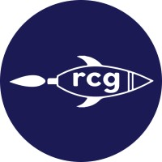

Projects

Michigan Football Analytics Society


Carnegie Mellon Data Science
We sought to incorporate tracking data from weeks 1-6 of the 2017 NFL season to predict whether the next play would be a run or a pass using machine learning. We also updated the play type predictions for every tenth of a second until 2.5 seconds after the snap.